| Menu Dados |
|
Selecionar
Esse grupo de
funções permite selecionar pontos da matriz de
dados através de diversos métodos, que podem ser usados para operações
específicas como exclusão, interpolação, operações matemáticas,
exportação,
entre outras.
Os métodos de
seleção disponíveis são:
- Selecionar
por caixa
- Selecionar
por barra
- Selecionar por valor
- Selecionar por tempo
- Selecionar
pontos inválidos
- Selecionar
pontos repetidos
- Selecionar
ruído no tempo
- Selecionar pontos inadequados de tempo
- Selecionar pontos inadequados de TOP
- Selecionar spikes
Clique no menu “Dados ►
Selecionar ... ► [opção desejada]” ou no botão 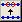
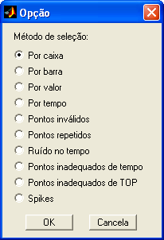
Após a seleção,
a quantidade de pontos selecionados
(apresentada no canto superior direito da janela) será atualizada:

As operações
que se aplicam apenas aos pontos selecionados
são explicitadas nos menus (por exemplo, “Excluir pontos
selecionados”). As
operações em que o usuário tem a opção de aplicar as modificações
apenas nos
pontos selecionados apresentam, na Caixa de Diálogo, um campo “Em”, em
que o
usuário deve selecionar a opção “Seleção”:

Selecionar
por Caixa
Essa função é
semelhante à função “Selecionar
/ desselecionar pontos”,
porém é executada apenas
uma vez a cada clique no menu,
não permanecendo continuamente
ativada.
Clique no menu “Dados ►
Selecionar ... ► Por caixa”.
Após ativar a
função, defina um retângulo com o mouse para
selecionar todos os pontos do seu interior.
Exemplo:

Para selecionar
pontos inválidos (“NaN”),
o R_DAT considera o posicionamento dos mesmos como uma interpolação
linear dos
pontos válidos adjacentes:
Selecionar
por Barra
Essa função
permite ao usuário definir um segmento de reta e
selecionar os pontos acima ou abaixo do mesmo, limitados em x pelas
suas
extremidades. Esse recurso é útil para selecionar ruído em parâmetros
crescentes, como o tempo.
Clique no menu “Dados ►
Selecionar ... ► Por barra”.
Após ativar a
função, siga os passos do exemplo abaixo:
Exemplo:
|
1- Defina o 1°
ponto da barra: |
2- Defina o 2°
ponto da barra: |
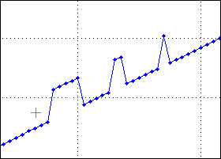 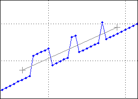
|
3- Clique acima
ou abaixo da barra: |
4- Os pontos
serão selecionados: |
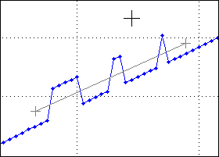 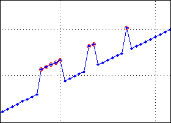
Para selecionar
pontos inválidos, o R_DAT considera o posicionamento
dos mesmos como uma interpolação linear dos pontos válidos adjacentes.
Selecionar
por Valor
Essa função
permite selecionar todos os pontos do parâmetro
que atendam a uma condição lógica.
Clique no menu “Dados ►
Selecionar ... ► Por valor”.
A Caixa de
Diálogo solicitará que o usuário indique os
parâmetros para a operação:
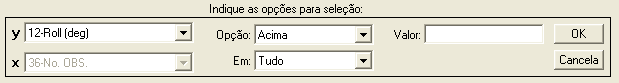
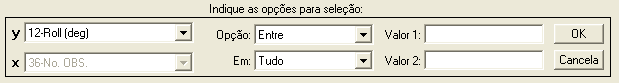
● No campo “y”,
selecione o parâmetro a ser usado na
operação;
● No campo
“Opção” indique a operação lógica desejada.
As opções são:
|
Opção |
Seleção |
Representação |
|
Acima |
Pontos maiores
que o valor de referência |
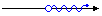 |
|
Abaixo |
Pontos menores
que o valor de referência |
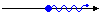 |
|
Acima inclusive |
Pontos maiores
ou iguais ao valor de referência |
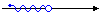 |
|
Abaixo inclusive |
Pontos menores
ou iguais ao valor de referência |
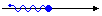 |
|
Igual a |
Pontos iguais
ao valor de referência |
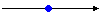 |
|
Entre |
Pontos entre
dois valores de referência |
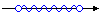 |
|
Entre inclusive |
Pontos entre ou
iguais a dois valores de referência |
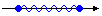 |
|
Fora de |
Pontos fora de
dois valores de referência |
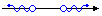 |
|
Fora de
inclusive |
Pontos fora ou
iguais a dois valores de referência |
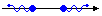 |
● No campo
“Em”, indique em que parte do parâmetro
deseja procurar os pontos. As opções são:
|
Opção |
Descrição |
|
Tudo |
Em toda a
extensão do parâmetro. |
|
Intervalo |
Apenas no
intervalo selecionado (intervalo visível no gráfico). |
● No campo
“Valor” ou nos campos “Valor 1
e “Valor 2, indique o(s) valor(es)
de referência para a operação lógica.
Após clicar
“OK” os pontos que atenderem aos critérios serão
selecionados. Caso já haja pontos selecionados, o R_DAT questionará o
usuário
se deseja acrescentar os novos pontos aos anteriores ou substituí-los:
Essa operação
não seleciona os pontos inválidos, mesmo que
estejam contidos num intervalo que atenda aos critérios.
Selecionar
por Tempo
Essa função
permite selecionar todos os pontos contidos em um intervalo de tempo.
Clique no menu “Dados ►
Selecionar ... ► Por tempo.
O R_DAT
analisará o parâmetro selecionado
como abscissa. Caso o mesmo for reconhecido
como parâmetro de tempo, ele será usado como referência para
a
busca. Caso não seja, o R_DAT alternará a abscissa para o tempo de
referência
dos eventos e pontos de ensaio, caso exista, ou para o primeiro
parâmetro de
tempo da lista.
A Caixa de
Diálogo solicitará que o usuário indique os
parâmetros para a operação:
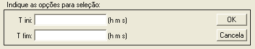
● No campo “T
ini”,
indique o tempo inicial do intervalo em qualquer formato reconhecido
pelo R_DAT;
● No campo “T
fim”,
indique o tempo final do intervalo em qualquer formato reconhecido
pelo R_DAT;
Selecionar
Pontos Inválidos
Essa função
permite selecionar todos os pontos inválidos do
parâmetro y. Após a seleção é possível revalidar os pontos através da
função “Interpolar
pontos selecionados”.
Clique no menu “Dados ►
Selecionar ... ► Pontos inválidos”.
Os pontos
inválidos (“NaN”)
serão selecionados. Caso já haja pontos selecionados, o R_DAT
questionará o
usuário se deseja acrescentar os novos pontos aos anteriores ou
substituí-los:
Os pontos
inválidos selecionados também são representados
pelo círculo vermelho, mas sua posição será uma interpolação linear dos
pontos
válidos adjacentes. O mesmo posicionamento é adotado para selecionar
pontos
inválidos pelos métodos “por caixa” e “por barra”.
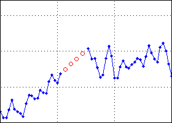
Selecionar
Pontos Repetidos
Essa função
permite selecionar todos os pontos repetidos do
parâmetro y.
Clique no menu “Dados ►
Selecionar ... ► Pontos repetidos”.
Os pontos
repetidos serão selecionados. Caso já haja pontos
selecionados, o R_DAT questionará o usuário se deseja acrescentar os
novos
pontos aos anteriores ou substituí-los:
| |
Selecionar
/ Desselecionar |
Selecionar
ruído no tempo |
|